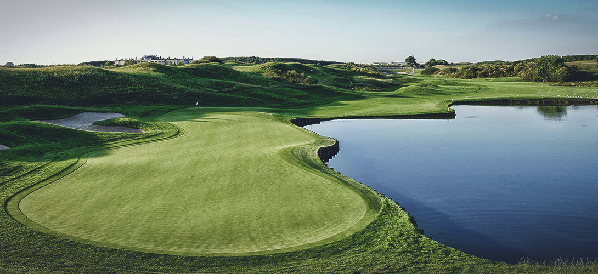

추천골프클럽
Le Golf National
Paris, France

세계적인 명성과 뛰어난 유럽 최고의 챔피언십 골프 클럽

기본정보
- 개장연도: 1990년
- 규모: 45홀, 파143 총 15,693야드(알바트로스- 파72, 7,331야드 / 이글- 파71, 6,224야드 / 와즐레- 32, 2,138야드)
- 코스 정보: 총 3개 (알바트로스 코스(18홀), 이글 코스(18홀), 와즐레 코스(9홀)
- 부대시설: 클럽하우스, 골프 아카데미, 호텔, 레스토랑, 프로샵
- 주소: 2, avenue du golf, CS40549, 78286 Guyancourt cedex, France
- 전화번호: +331 30 43 36 00
- 웹사이트 : https://www.golf-national.com/en/
세계적인 명성과 뛰어난 유럽 최고의 챔피언십 골프 클럽
PGA TOUR 2018 ‘Ryder Cup’ 개최지
1906년부터 이어져 온 프랑스 오픈을 발전시키기 위해 만들어진 골프장으로, 클로드 까르띠에가 이끌던 프랑스 골프 협회의 주도 아래 1987년 허버트 체스노와 로버트 본 해그가 설계하였다. 프랑스 파리 생-깡땡-앙-이브린 Saint-Quentin-en-Yvelines 지역에 위치한 이 골프 클럽은 프랑스를 대표하는 골프 클럽 중 한 곳이다.
1990년에 개장한 이래 지금껏 매년 국제 대회를 개최한 곳으로 널리 알려져 있으며 프랑스 골프장 최초로 전 세계 스포츠 경기 중 월드컵과 올림픽에 이어 세 번째로 방송 중계가 많은 2018 ‘Ryder Cup’의 개최지로 선정되며 또 한 번 전 세계 골프들의 이목을 집중시킨다.
내셔널 골프 클럽의 시그니처 코스이자 프랑스 오픈의 홈 코스인 ‘알바트로스’는 영국 ‘골프 월드‘가 선정한 세계 100대 코스에서 64위, 유럽의 톱 100코스 중 6위에 이름을 올린 바 있는 명문 코스로, 라이더 컵을 위해 관계와 배수 시스템 개선을 포함, 700만 유로 규모의 대대적 리뉴얼 작업을 통해 한층 업그레이드되었다.
세계적인 선수들이 ‘멋스러우면서도 까다롭다’고 표현한 이곳은 파리 외곽의 가이안코트에 위치하여 루이 14세의 보금자리였던 베르사유 궁전을 감싸고 있으며, 푸른 자연 속에 어우러진 프랑스 특유의 고풍스러움으로 가득하지만, 페어웨이 굴곡이 심하고 벙커와 해저드가 많아, 극도로 정교한 플레이를 요구하는 난도가 높고 까다로운 코스이다.